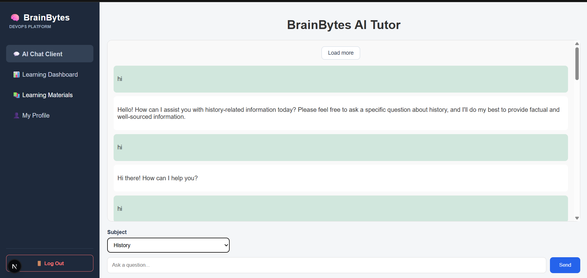

Problem first
I focus on understanding the user and system problem before jumping into implementation.
SOFTWARE DEVELOPMENT • FULL-STACK • AI
I'm J.R. Gabriel Portillo, a BSIT Software Development student nearing graduation, focused on full-stack web development, backend systems, AI integration, and DevOps.

01 — ABOUT
I enjoy turning requirements into working interfaces and connecting those interfaces to reliable backend systems. My project experience spans web development, APIs, databases, automated testing, CI/CD, monitoring, and AI-powered applications.
I focus on understanding the user and system problem before jumping into implementation.
I work across frontend, backend, databases, APIs, and deployment workflows.
Every project is an opportunity to strengthen both technical and practical development skills.
02 — TOOLKIT
03 — SELECTED WORK

AI-powered mock thesis-defense simulator designed to help students practice defending their research through interactive sessions.

AI tutoring platform project with REST services, automated testing, CI/CD hardening, and production-style monitoring.

Responsive café discovery application with search, filtering, favorites, profiles, API communication, and data persistence.
04 — EDUCATION
Mapúa Malayan Colleges Laguna (MCL)
Software Development track. Completed 149 of 161 required credits.
05 — CONTACT
I'm currently seeking an IT internship where I can apply and further develop my software development skills.